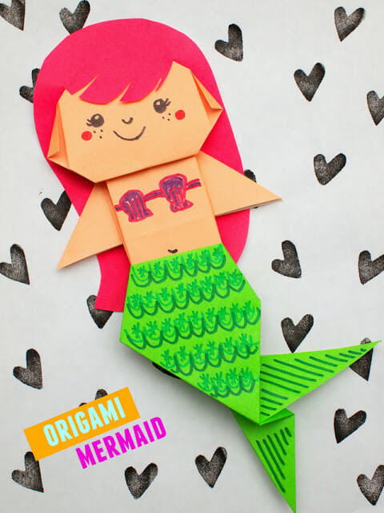

• Get a skin colored origami paper. Fold it in half and then unfold it. Fold it in other half and then unfold it.
• Turn the paper completely and then fold the paper diagonally.
• Now flip the paper again, on crease marks, fold it in order to create square.
• Once the square is formed, fold back the two top sides.
• Then fold the back sides. You got yourself a mermaid face.
• For mermaid body- get a skin colored paper again.
• Place the white side up and then fold the paper into half. and then fold it again into other half.
• Fold up again the half of the half part. It should meet in between.
• Now fold the left side and right side of the origami, so that it meets in the middle.
• From the bottom of the paper, fold it out to create an opening for arms. do it both sides. you got yourself arms.
• For the tail, get a green paper.
• Place the white side upwards and now from right side of the paper create a fold. Then do it similarly from the other side. then cover the top portion of the paper with the fold.
• We got ourselves a triangle .
• Place you triangle in a way that the pointed side comes down.
• Fold the pointed side to create a curve. and then fold it again. this will form the tail of the mermaid.
• For the hair, grab a Hot pink paper. Cut it in a hair shape giving fringes in the front with a cut for the face to go inside the cut.
• Place it all together. we have made a mermaid.